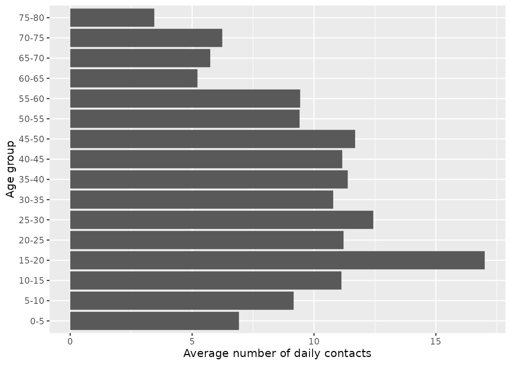

NPIs: age-structured model
Oscar Dimdore-Miles, Idil Cazimoglu and Liangti Dai
28/10/2021
SEIRDNPIAge.RmdIntroduction
Before effective vaccines existed, the only public health interventions available to governments around the world were non-pharmaceutical interventions (NPIs). The types of NPIs deployed have included, amongst other interventions: early detection and isolation of cases; mask-wearing and hand hygiene measures; physical distancing, where members of the public are encouraged to isolate from one another; shielding vulnerable groups, for example, by requiring elderly individuals to not mix with the public; school closures; and country- or region-wide lockdowns, where members of the public are required to remain in their homes with (typically) stringent restrictions on the nature of and degree to which they socialise.
A variety of NPIs have been estimated as having substantially lowered COVID-19 transmission and reduced burdens on health systems across a range of countries (Flaxman et al. 2020; Li et al. 2021; Lai et al. 2020; Davies et al. 2020). As such, these interventions were likely crucial in averting many COVID-19-related deaths.
In this vignette, we introduce an age-structured model including NPI strategies (SEIRDNPIAge) and demonstrate the effect of a number of different NPI strategies to examine the effects of interventions. Since a number of the aforementioned NPIs have varying effects on different age groups, we chose to account for them by extending the SEIRDAge model.
Before we start, we define some helper functions for plotting and contact matrix processing which avoid repeated code.
library(comomodels)
library(tidyverse)
#> ── Attaching packages ─────────────────────────────────────── tidyverse 1.3.1 ──
#> ✔ ggplot2 3.3.5 ✔ purrr 0.3.4
#> ✔ tibble 3.1.6 ✔ dplyr 1.0.7
#> ✔ tidyr 1.1.4 ✔ stringr 1.4.0
#> ✔ readr 2.1.1 ✔ forcats 0.5.1
#> ── Conflicts ────────────────────────────────────────── tidyverse_conflicts() ──
#> ✖ dplyr::filter() masks stats::filter()
#> ✖ dplyr::lag() masks stats::lag()
# color by age groups
ggplot_results_by_compartment <- function(output, x="time", y="value", colour="age_range",
labs_x = "time (days)", labs_y = "fraction of the population", text_size=20){
output %>%
ggplot(aes_string(x=x, y=y, colour=colour)) +
geom_line() +
scale_colour_viridis_d() +
labs(x = labs_x, y = labs_y) +
theme(text = element_text(size = text_size))
}
format_matrix <- function(contact_matrix, age_names) {
colnames(contact_matrix) <- age_names
contact_matrix$age_infectee <- age_names
contact_matrix %>%
pivot_longer(all_of(age_names)) %>%
rename(age_infector=name) %>%
mutate(age_infector=fct_relevel(age_infector, age_names)) %>%
mutate(age_infectee=fct_relevel(age_infectee, age_names))
}
combine_contact_matrices <- function(c_all){
c_all %>%
group_by(age_infectee, age_infector) %>%
summarise(value=sum(value))
}
combined_contact_matrices_wider <- function(c_combined){
c_combined %>%
pivot_wider(id_cols = age_infectee, names_from = age_infector,
values_from=value) %>%
ungroup() %>%
select(-age_infectee) %>% as.matrix()
}The SEIRDNPIAge Model
The SEIRDNPIAge model consists of five ODEs describing five populations of susceptible, recovered, infectious, recovered and dead individuals. Susceptible individuals (\(S\)) have not been exposed to the virus. Exposed individuals (\(E\)) have been exposed to the virus and have been infected but are not yet infectious to others; they are in the incubation period. Infectious individuals (\(I\)) can spread the virus to others. Recovered individuals (\(R\)) are no longer infectious and are protected from reinfection. Here, we assume that there is no waning natural immunity, so once individuals are recovered from infection they never become susceptible again. Births and natural deaths (i.e. those unrelated to COVID-19 infection) are not considered in this model. Those infected individuals who have died due to infection form the “dead” (\(D\)) compartment.
The ODEs describing how the five populations evolve over time are:
\[\frac{\text{d}S_i}{\text{d}t} = -\beta(t) S_i \Sigma_{j}C_{ij}(t) I_j,\] \[\frac{\text{d}E_i}{\text{d}t} = \beta(t) S_i \Sigma_{j}C_{ij}(t) I_j-\kappa E_i,\] \[\frac{\text{d}I_i}{\text{d}t} = \kappa E_i - (\gamma_i + \mu_i) I_i,\] \[\frac{\text{d}R_i}{\text{d}t} = \gamma_i I_i,\] \[\frac{\text{d}D_i}{\text{d}t} = \mu_i I_i,\]
where \(i\) represents a particular age class, and \(t\) represents a time point. \(\kappa\), \(\gamma_i\), \(\mu_i\), \(\nu\) are positive parameters as described in the SEIRDAge model vignette.
The key parameters of the SEIRDNPIAge model are: \(\beta(t)\) and \(C_{ij}(t)\) representing time-dependent rates of infection and contact matrix elements, respectively. This model allows for discontinuous changes in either the rate parameter and / or the contact matrix over time in one or a number of intervention blocks.
What might those changes in these parameters represent? A change in \(\beta\) represents a change in the probability that a transmission occurs upon an infectious and susceptible individual meeting. If \(\beta\) declined, this could represent, for instance, a government imposition of a rule that requires individuals to wear masks when in public spaces. A change in the contact matrix could represent a number of NPIs: in the event of a lockdown, the number of daily contacts outside the home would likely decline; if a decision was taken to shield the elderly, this would result in a decline in the relevant elements of the contact matrix pertaining to this group.
The system is closed by specifying the initial conditions \[S(0) = S_0,\ E(0) = E_0,\ I(0) = I_0,\ R(0) = R_0, \ D(0) = 0.\] In the implementation of the model in this package, the variables are normalized so \(S(t) + E(t) + I(t) + R(t) + D(t) \equiv 1\) for any given \(t\). This means that each of these state variables represents the fraction of the population in each of these states at a given point in time.
The calculation of the basic reproduction number follows the same next-generation matrix approach as in the SEIRDAge model, and uses the non-intervention parameters to calculate it.
Mimicking the 1st UK lockdown
On the 23rd March 2022, the Prime Minister of the UK announced the first lockdown in the country, ordering people to “stay at home” (IFG 2021). The lockdown then came legally into force on the 26th March. In June, there was a phased reopening of schools, non-essential shops reopened and a further relaxing of restrictions including a “2m distancing rule”. During early July, more restrictions were eased leading to the reopening of pubs, restaurants and hairdressers. Whilst the restrictions were not fully eased until the following year, we assume that the first lockdown lasted from 26th March until early July: a period of roughly 14 weeks.
During lockdown, we assume that overall contacts declined by a factor of 2, which is similar to the ranges considered in Imperial College’s Report 9 (Ferguson et al. 2020).
We first load the relevant contact matrices, country-level demographics from the UN for the UK.
# get contact matrices for the UK
ages <- seq(0, 80, 5)
age_names <- vector(length = 16)
for(i in seq_along(age_names)) {
age_names[i] <- paste0(ages[i], "-", ages[i + 1])
}
c_home <- format_matrix(contact_home$`United Kingdom of Great Britain`, age_names) %>% mutate(type="home")
c_work <- format_matrix(contact_work$`United Kingdom of Great Britain`, age_names) %>% mutate(type="work")
c_school <- format_matrix(contact_school$`United Kingdom of Great Britain`, age_names) %>% mutate(type="school")
c_other <- format_matrix(contact_other$`United Kingdom of Great Britain`, age_names) %>% mutate(type="other")
c_all <- c_home %>%
bind_rows(c_work) %>%
bind_rows(c_school) %>%
bind_rows(c_other)
c_combined <- combine_contact_matrices(c_all)
#> `summarise()` has grouped output by 'age_infectee'. You can override using the `.groups` argument.
# use demographic data to create normalised population fractions
load(file = "../data/population.rda")
pops = population[population$country == 'United Kingdom', ]$pop
pop_fraction = pops/sum(pops)
# the contact matrix has an upper group of 80+, so we sum the remaining fractions beyond this point
pop_fraction[16] = sum(pop_fraction[16:21])
pop_fraction = pop_fraction[1:16]
# reshape contact matrix into 16x16 form
c_combined_wider <- combined_contact_matrices_wider(c_combined)
# setting up the number of age classes
n_ages <- 16We next create a model with the appropriate contact matrices: contact_matrix is a single matrix that represents the original contact matrix when no intervention is applied, whereas contact_matrix_npi defines a list of matrices corresponding to the contact matrices of each intervention period. n_npi represents the the number of non-overlapping NPI intervention periods: here, this is 1.
# create model
n_npi = 1 # only one intervention
lockdown_reduced_contacts_factor <- 2
model <- SEIRDNPIAge(n_age_categories = n_ages,
n_npi = n_npi,
contact_matrix = c_combined_wider,
contact_matrix_npi = list(c_combined_wider / lockdown_reduced_contacts_factor),
age_ranges = as.list(age_names)
)We now need to set the initial conditions for the model. Here, we assume a uniform initial infected population of 0.1% across all age groups. The remaining 99.9% of the population starts as susceptibles.
inits <- list(S0=pop_fraction * 0.999,
E0=rep(0, n_ages),
I0=pop_fraction * 0.001,
R0=rep(0, n_ages),
D0=rep(0, n_ages))
initial_conditions(model) <- initsNext, we need to set the transmission parameter values \(\beta\), \(\kappa\), \(\gamma\) and \(\mu\).
To set age-dependent values for \(\gamma\) and \(\mu\), we adopted the age-dependent Infection Fatality Ratio (IFR, the fraction of infected individuals who go on to die) according to (Verity et al. 2020), as IFR is only dependent on \(\gamma\) and \(\mu\):
\[ \text{IFR}_i = \frac{\text{rate of death of age class }i}{\text{rate of death of age class }i + \text{rate of recovery of age class }i} = \frac{\mu_i}{\mu_i + \gamma_i} \]
We assume an average latency period (\(1/\kappa\)) of 5.5 days (as has been estimated for COVID-19; Xin et al. (2021)) and an average duration of infectiousness (\(1/\eta\)) of 2 days (which indicates that, after 10 days, \(<1\%\) would be infectious, which is in line with UK policy which assumes individuals cannot pass on infection after 10 days; UK government (2021)). For simplicity, we assume that symptom onset occurs at the time an individual becomes infectious (although evidence suggests there is presymptomatic transmission; UK government (2021)).
We assume the following parameterisation:
\[ \eta = 1/{\text{av. time until noninfectious}}=1/2 \\ \gamma_i = \eta (1-\text{IFR}_i) \\ \mu_i = \eta \text{IFR}_i. \]
At this point, \(\kappa\) is defined; \(\gamma_i\) and \(\mu_i\) can be derived; and \(\beta(t)\) needs to be set. In the setter function transmission_parameters for SEIRDNPIAge, the parameter beta defines the transmission rate for each age group when no intervention is applied; whereas beta_npi defines a list of age-dependent transmission rates that corresponds to each intervention period, or a single vector or a value if there’s only a single intervention period. Consistent with the examples presented in SEIRDAge class, here we choose a value for \(\beta\) to be the same across all age groups to result in the same \(R_0\) value (\(R_0=2.4\)) as reported in “Report 9” by Imperial College London (Ferguson et al. 2020), and we set beta_npi to be \(\beta\): i.e. it is assumed that there is no change in the probability of infection if an infectious and susceptible individual do meet – note, this would be violated if, during the lockdown, people were more likely to wear masks.
# IFR for each age group
# (for 80+ group we pick upper age to be 110)
df <- tribble(
~lower_age, ~upper_age, ~IFR,
0, 9, 0.00161,
10, 19, 0.00695,
20, 29, 0.0309,
30, 39, 0.0844,
40, 49, 0.161,
50, 59, 0.595,
60, 69, 1.93,
70, 79, 4.28,
80, 110, 7.80) %>%
mutate(IFR = IFR / 100) %>%
mutate(age_range=paste0(lower_age, "-", upper_age)) %>%
mutate(age_range=as.factor(age_range)) %>%
mutate(age_range=fct_reorder(age_range, lower_age))
# setting up kappa, eta, beta
kappa <- 1 / 5.5
eta <- 1 / 2
beta <- 1.69
# assume IFR constant within age ranges of contact matrix bands
get_lower_age <- function(x) {
as.numeric(substr(x, 1, regexpr("-", x) - 1))
}
get_upper_age <- function(x) {
as.numeric(substr(x, regexpr("-", x) + 1, nchar(x)))
}
lower_age <- map_dbl(age_names, get_lower_age)
upper_age <- map_dbl(age_names, get_upper_age)
middle_age <- (lower_age + upper_age) / 2
# assume IFR is constant within age hands
IFR_vals <- vector(length = length(middle_age))
IFR_getter <- function(age, df) {
for(j in 1:nrow(df)) {
if(age > df$lower_age[j] & age <= df$upper_age[j])
return(df$IFR[j])
}
}
IFR_vals <- map_dbl(middle_age, ~IFR_getter(., df))
# defive age-dependent gamma and mu
gamma_vals <- eta * (1 - IFR_vals)
mu_vals <- eta * IFR_vals
# setting up transmission parameters
params <- list(beta_npi = beta, beta = beta,
kappa = kappa, gamma = gamma_vals, mu = mu_vals)
transmission_parameters(model) <- paramsWe can check if the basic reproduction number is as we expected:
Now we simulate the system assuming a single intervention between \(t=20\) and \(t=98\) days.
# create inteverntion
intervention <- list(list("starts"=20, "stops"=98))
interventions(model) <- intervention
# simulate for a year
times <- seq(0, 365, by = 1)
out_df <- run(model, times)Let us plot the population size for each epidemiological group and each age group.
states = out_df$states
states %>%
ggplot_results_by_compartment() +
facet_wrap(~compartment)It is hard to make out clear patterns when we examine all the compartments, so, in the next plot, we zoom in on the infectious population.
states %>%
filter(compartment=="I") %>%
ggplot_results_by_compartment() +
facet_wrap(~compartment)From this, the older age groups have the lowest peak infectious levels. This makes intuitive sense, since this age group have generally the lowest number of daily contacts. This is evident if we plot the overall number of daily contacts by age group, which peaks in the 15-20 age group.
c_combined %>%
group_by(age_infectee) %>%
summarise(value=sum(value)) %>%
ggplot(aes(x=age_infectee, y=value)) +
geom_col() +
xlab("Age group") +
ylab("Average number of daily contacts") +
coord_flip()
The number of cases mirrors the same patterns. From this plot, the impact of the lockdown period on cases is evident, causing a discontinuous change in cases at \(t=20\) days. When the lockdown is lifted, the epidemic quickly resumes.
changes <- out_df$changes
changes %>%
filter(compartment=="Incidence") %>%
ggplot_results_by_compartment(labs_y = "case fraction")If we focus on deaths, the picture is quite different. Deaths have the highest peak in the oldest age groups because the IFR for these groups is disproportionately high.
changes %>%
filter(compartment=="Deaths") %>%
ggplot_results_by_compartment(labs_y = "deaths fraction")Comparison with the no lockdown scenario
To evaluate the effectiveness of the lockdown intervention, we can compare this with a “baseline” scenario where we do nothing. Note, this baseline may be fairly unlikely because, even if a government chose not to implement a lockdown, the populace would likely change their behaviour in response to rising cases. For this baseline, we simulate from the SEIRDAge model using the same non-intervention parameters.
# parameterise model
model_baseline <- SEIRDAge(
n_age_categories = n_ages,
contact_matrix = c_combined_wider,
age_ranges = as.list(age_names)
)
params <- list(beta = beta,
kappa = kappa,
gamma = gamma_vals,
mu = mu_vals)
transmission_parameters(model_baseline) <- params
initial_conditions(model_baseline) <- inits
# run simulation
out_baseline <- run(model_baseline, times)With these simulations run, we can compare the daily cases across the lockdown and baseline scenarios.
# combine dataframes
changes_baseline <- out_baseline$changes %>%
mutate(scenario="baseline")
changes_lockdown <- changes %>%
mutate(scenario="lockdown")
changes_both <- changes_baseline %>%
bind_rows(changes_lockdown)
# plot
changes_both %>%
filter(compartment=="Incidence") %>%
ggplot(aes(x=time, y=value)) +
geom_line(aes(colour=scenario)) +
facet_wrap(~age_range) +
xlab("time (days)") +
ylab("case fraction") +
scale_color_brewer(palette = "Dark2")This illustrates a common trend across all age groups: the intervention decreases the peak case load and lengthens the epidemic. This is an example of what has colloquially been referred to as “flattening the [epidemic] curve”. This flattening is particularly important as it can reduce the peak burden on the health services, which could prevent it from being overwhelmed with demand.
References
Davies, Nicholas G, Adam J Kucharski, Rosalind M Eggo, Amy Gimma, W John Edmunds, Thibaut Jombart, Kathleen O’Reilly, et al. 2020. “Effects of Non-Pharmaceutical Interventions on Covid-19 Cases, Deaths, and Demand for Hospital Services in the Uk: A Modelling Study.” The Lancet Public Health 5 (7): e375–e385.
Ferguson, Neil, Daniel Laydon, Gemma Nedjati Gilani, Natsuko Imai, Kylie Ainslie, Marc Baguelin, Sangeeta Bhatia, et al. 2020. “Report 9: Impact of Non-Pharmaceutical Interventions (Npis) to Reduce Covid19 Mortality and Healthcare Demand.”
Flaxman, Seth, Swapnil Mishra, Axel Gandy, H Juliette T Unwin, Thomas A Mellan, Helen Coupland, Charles Whittaker, et al. 2020. “Estimating the Effects of Non-Pharmaceutical Interventions on Covid-19 in Europe.” Nature 584 (7820): 257–61.
IFG. 2021. “Timeline of UK coronavirus lockdowns, March 2020 to March 2021.” https://www.instituteforgovernment.org.uk/sites/default/files/timeline-lockdown-web.pdf.
Lai, Shengjie, Nick W Ruktanonchai, Liangcai Zhou, Olivia Prosper, Wei Luo, Jessica R Floyd, Amy Wesolowski, et al. 2020. “Effect of Non-Pharmaceutical Interventions to Contain Covid-19 in China.” Nature 585 (7825): 410–13.
Li, You, Harry Campbell, Durga Kulkarni, Alice Harpur, Madhurima Nundy, Xin Wang, Harish Nair, Usher Network for COVID, and others. 2021. “The Temporal Association of Introducing and Lifting Non-Pharmaceutical Interventions with the Time-Varying Reproduction Number (R) of Sars-Cov-2: A Modelling Study Across 131 Countries.” The Lancet Infectious Diseases 21 (2): 193–202.
UK government. 2021. “Stay at home: guidance for households with possible or confirmed coronavirus (COVID-19) infection. Updated 2 December 2021.” https://www.gov.uk/government/publications/covid-19-stay-at-home-guidance/stay-at-home-guidance-for-households-with-possible-coronavirus-covid-19-infection.
Verity, Robert, Lucy C Okell, Ilaria Dorigatti, Peter Winskill, Charles Whittaker, Natsuko Imai, Gina Cuomo-Dannenburg, et al. 2020. “Estimates of the Severity of Coronavirus Disease 2019: A Model-Based Analysis.” The Lancet Infectious Diseases 20 (6): 669–77.
Xin, Hualei, Yu Li, Peng Wu, Zhili Li, Eric HY Lau, Ying Qin, Liping Wang, Benjamin J Cowling, Tim Tsang, and Zhongjie Li. 2021. “Estimating the Latent Period of Coronavirus Disease 2019 (Covid-19).” Clinical Infectious Diseases: An Official Publication of the Infectious Diseases Society of America.